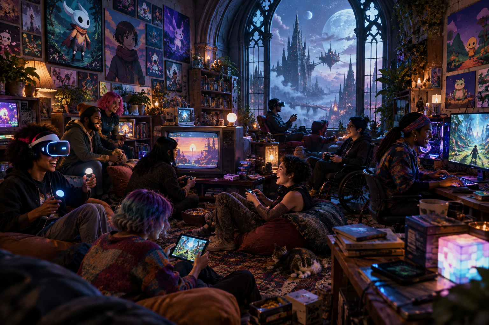
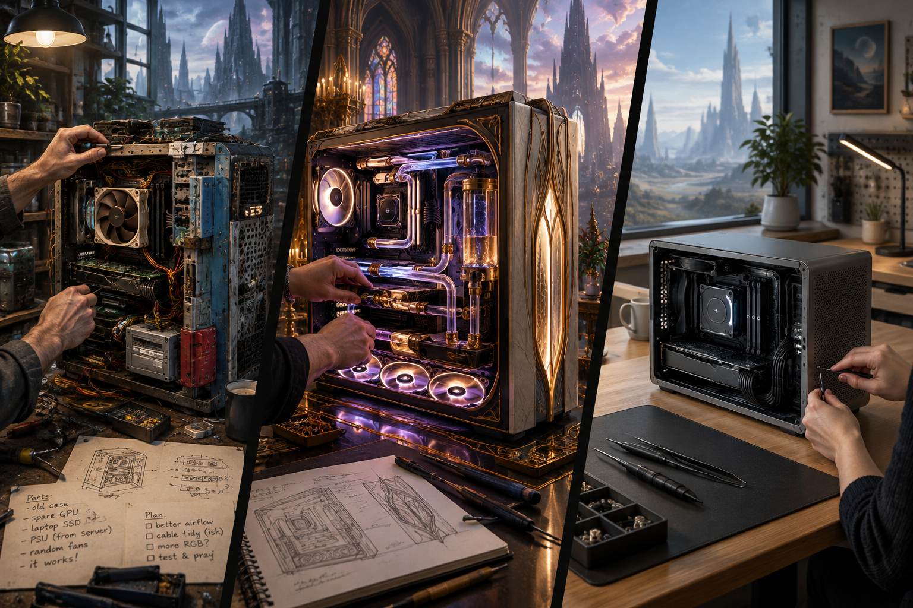
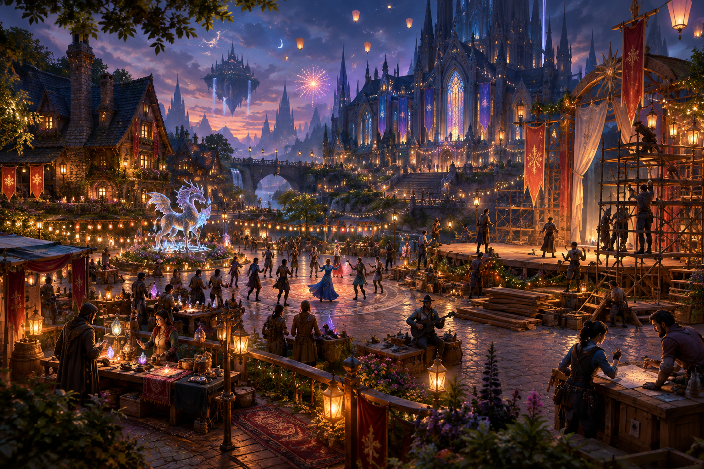
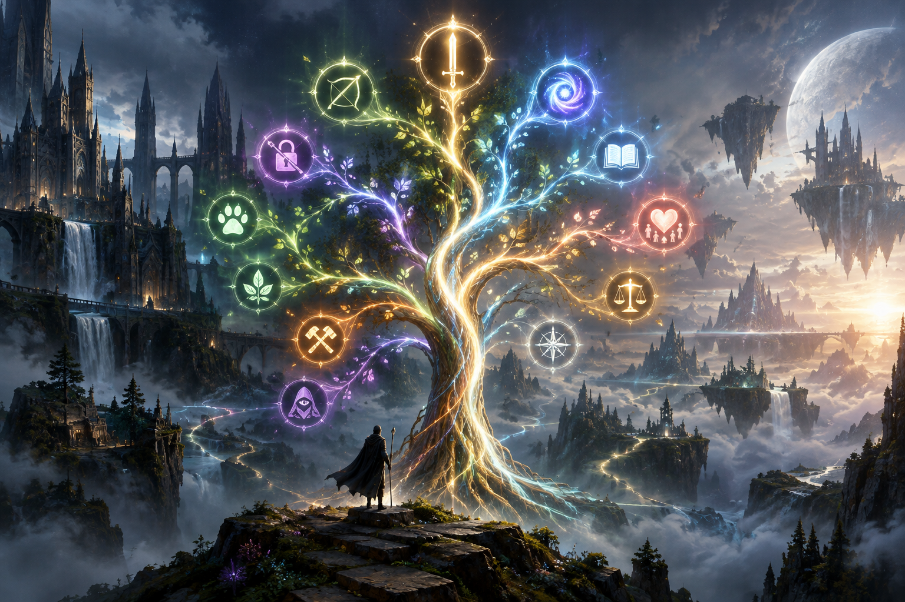
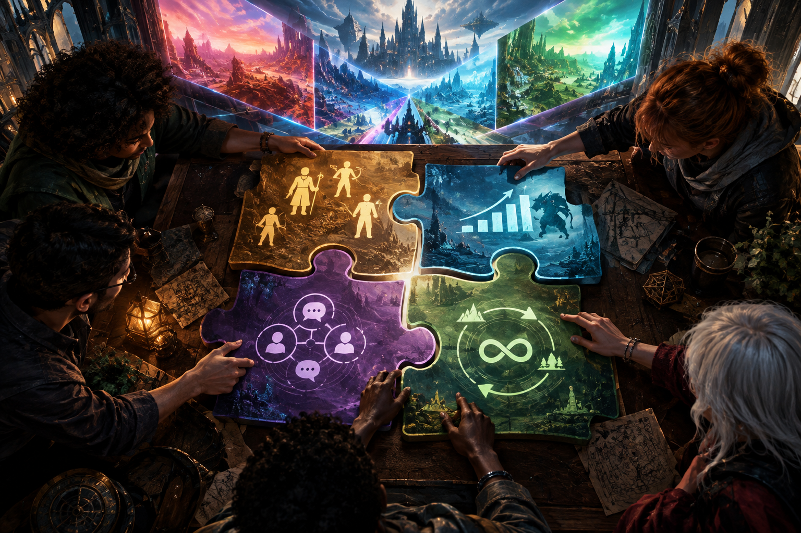

Access in the Age of Expensive Pixels: How Rising Hardware Costs Are Reshaping Gaming Culture
With graphics cards at an all-time high and hardware barriers mounting, gamers in 2026 are forging creative and resilient paths to stay connected, adaptive, and engaged. The community’s responses are redefining what it means to participate, innovate, and belong.
READ THE STORY ↗
Repurpose, Refine, Reimagine: The Three-Pronged Future of Custom PC Building in 2026
From upcycled workhorses to luxury showcases and minimalist marvels, custom PC building in 2026 is a story of creative resilience in a fast-evolving landscape.
READ THE STORY ↗
Welcome Home: How Player Housing Is Building Better Communities in MMORPGs
From Azeroth to Tyria, persistent and imaginative player housing systems are redefining what it means to belong in an MMORPG—and boosting social bonds, creativity, and retention along the way.
READ THE STORY ↗
Branching Out: The Modern Renaissance of Skill Trees and Character Customization in RPGs
Innovative skill trees are at the heart of today’s RPGs, giving players more control, expression, and satisfaction than ever before. We investigate how contemporary games are taking skill progression beyond statistics, looking at flexibility, narrative integration, and evolving design for both newcomers and veterans.
READ THE STORY ↗
Designing for Two (or Four): How Game Mechanics Are Evolving for Modern Console Co-Op
Today’s best console co-op games don’t simply let another player join in — they’re built for collaboration at the foundation. From asymmetrical design to adaptive challenges, here’s how developers are crafting a new era of genuinely shared play.
READ THE STORY ↗